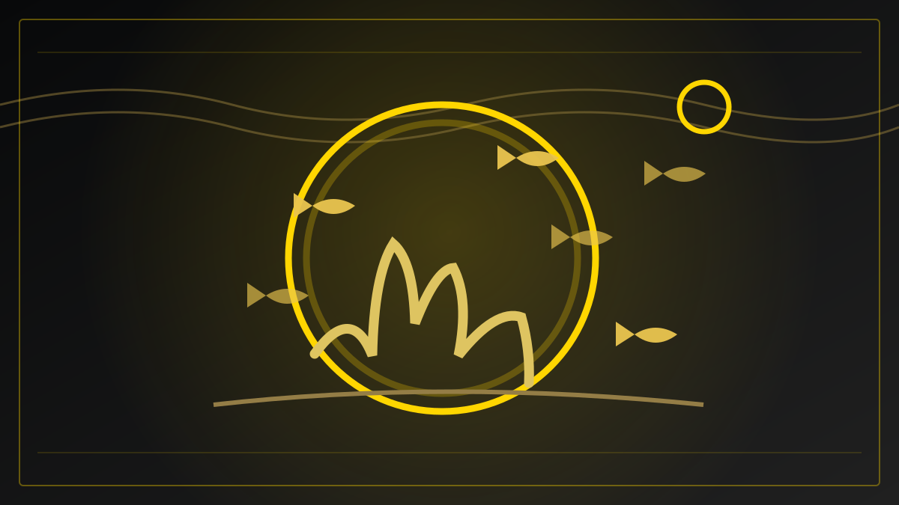
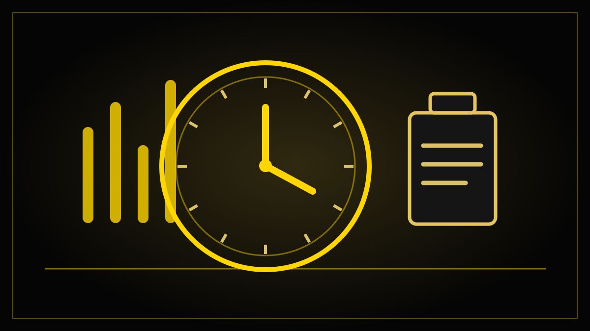

FREDAGSUTGAVEN – REDAKSJONELLE UTKAST, IKKE PUBLISERT
Fem saker til fredagens gjennomgang
Planlagt utgave fredag 30. oktober 2026. Sakene bygger på dokumenterte nyheter fra denne uken, men må sjekkes mot nye opplysninger på publiseringsdagen. Ingen er lagt ut på avisens forside.
Se også onsdagens fem utkast, inkludert den oppdaterte saken om Oslo tingretts avgjørelse i Meta-saken.

Hvor godt beskyttet er egentlig norske havområder?
Norge rapporterer 13,3 prosent bevaring. Bare rundt fire prosent er formelt vernet.

Hva gjør du når mobilnettet og internett forsvinner?
Egenberedskapsuka setter søkelys på hvordan man får informasjon når nettet svikter.

Regjeringen vil gjøre pensjon enklere å forstå
Et nytt forslag om bedre pensjonsinformasjon er sendt på høring.

Én av seks oppgir å stå utenfor de vanlige arbeidstidsreglene
Ny OsloMet-AFI-rapport beskriver hvem som er unntatt, og hvordan arbeidstiden følges opp.

MATATA tilbake på Oslo World: Fattigdom, humor og kampen for å lykkes
Scenekunst fra Kenya og Norge – og en forestilling om å møte motgang med musikk, dans og humor.